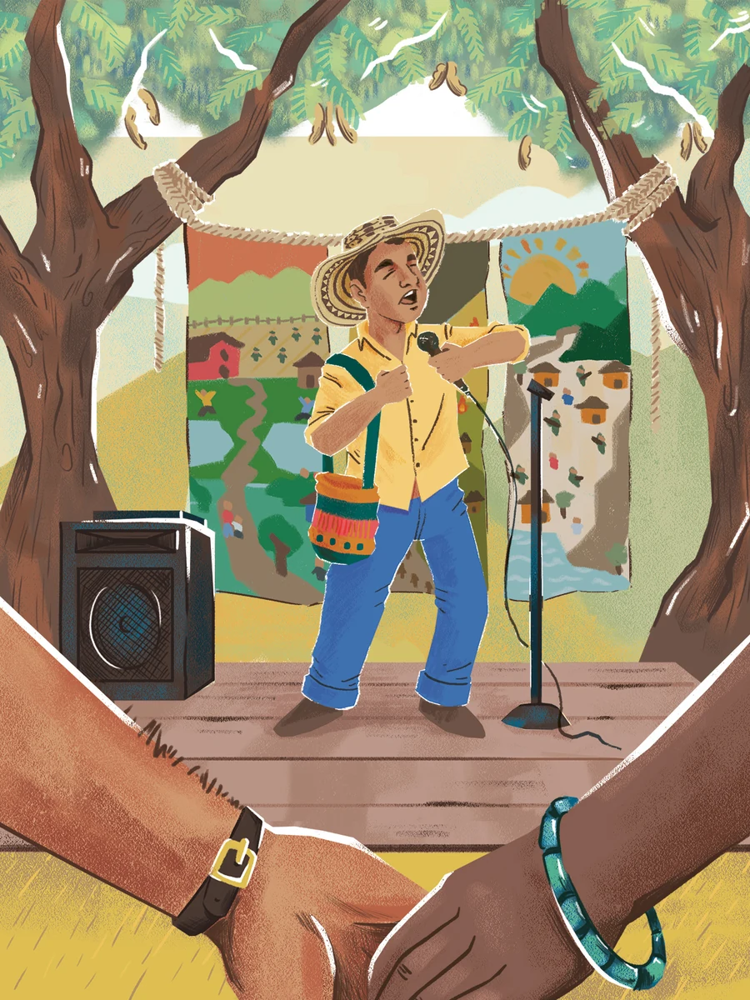
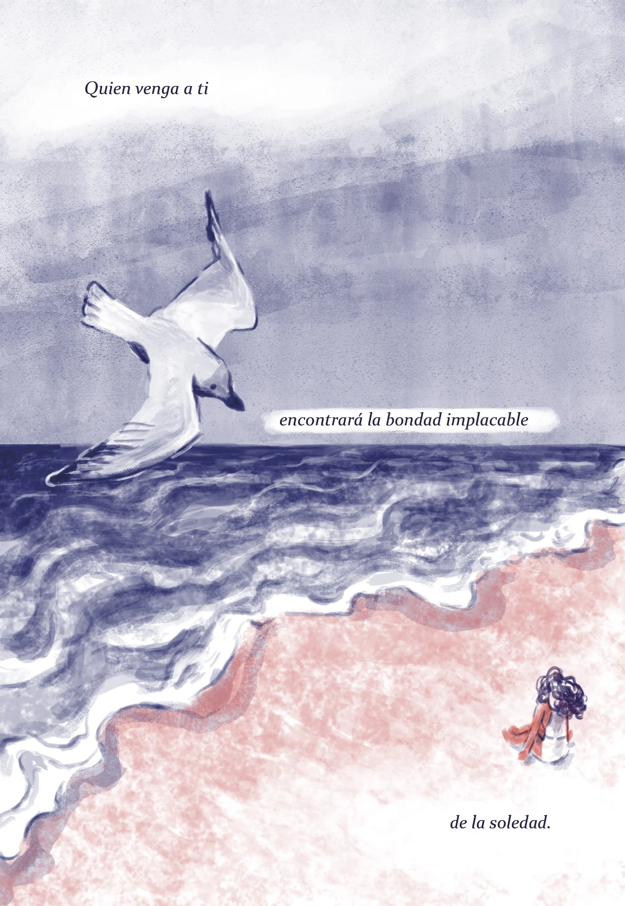
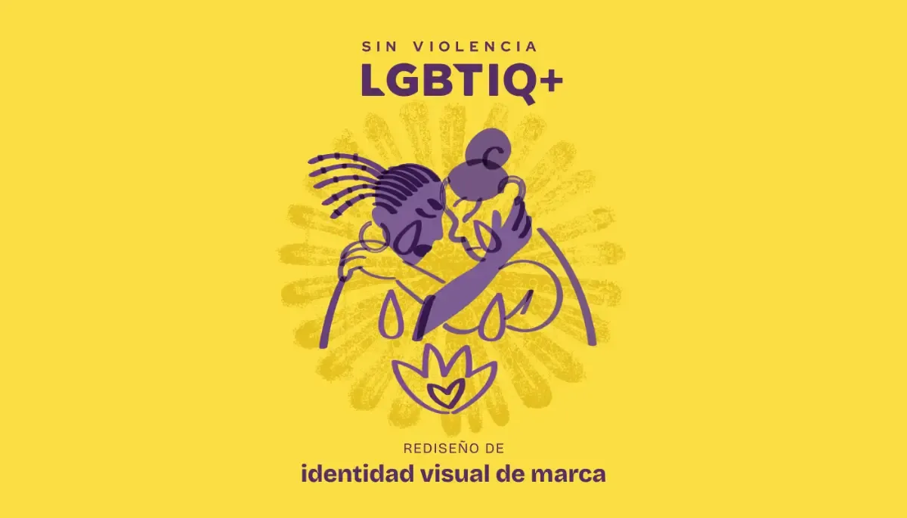
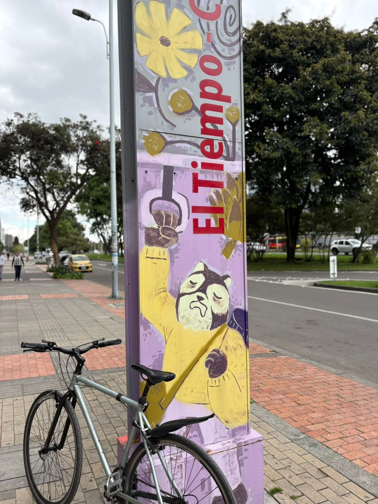
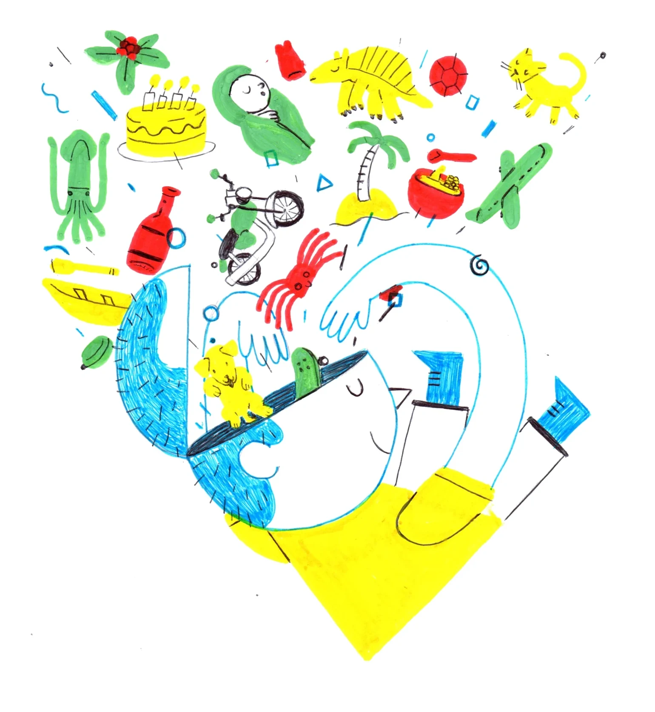
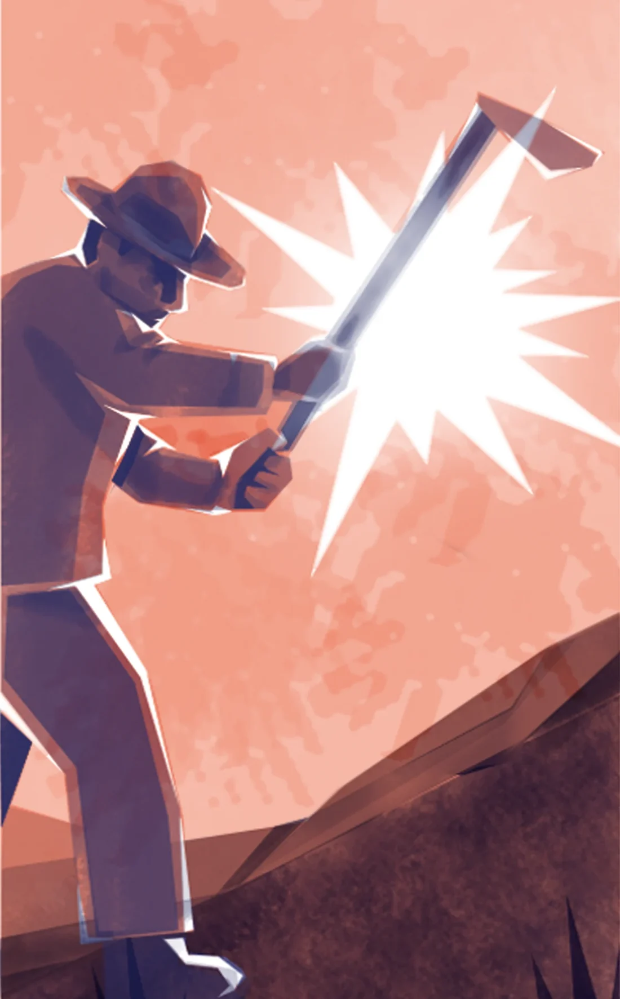
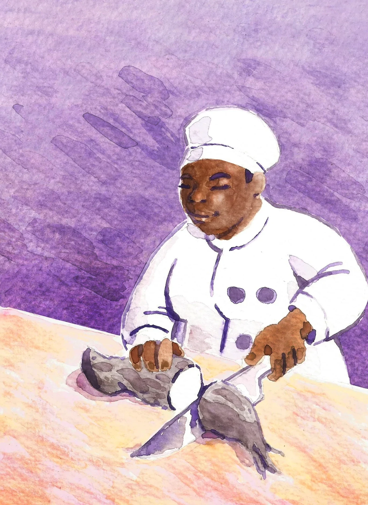
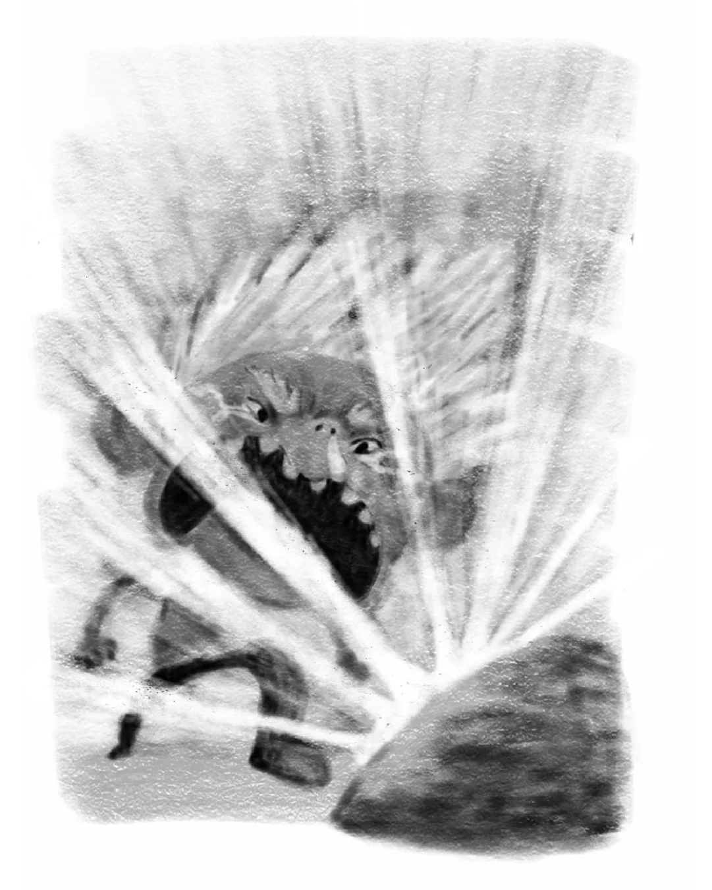
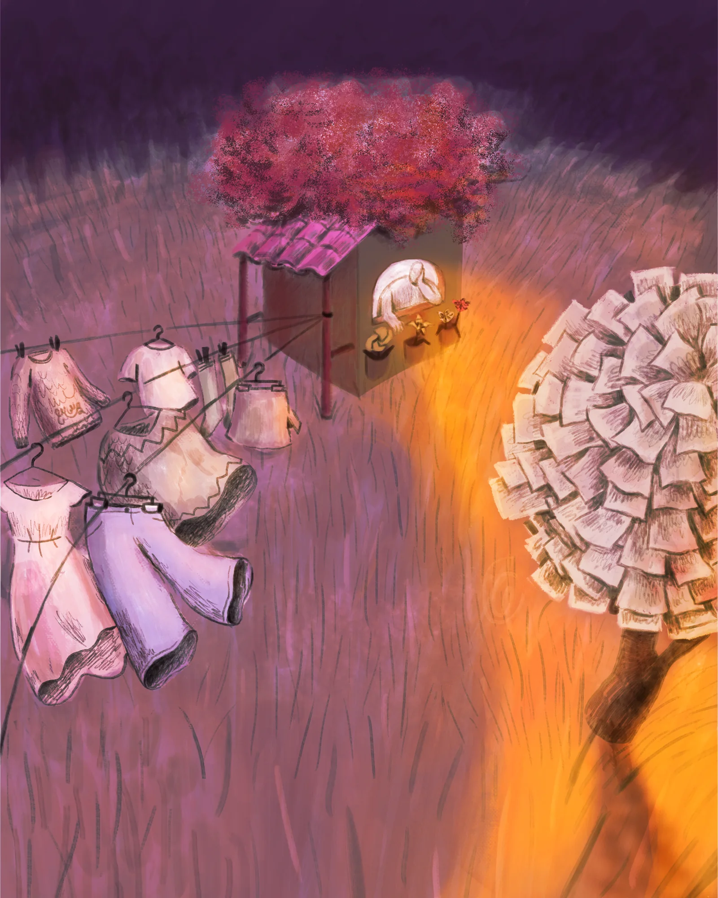
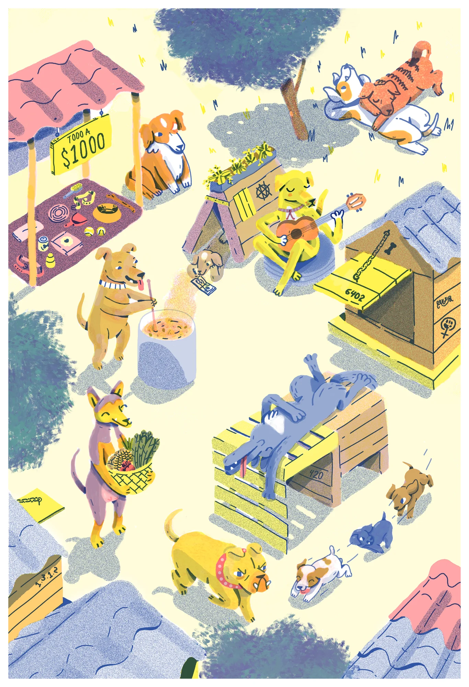

Fabián Carvajal · gulupa. IlustraciónIllustration

TrabajoWork
-

Relatos pal desolvido
2026 · Ilustración y diagramaciónIllustration and layout
-

Carta al mar
2026 · Autoría integralSole author
-

Sin Violencia LGBTIQ+
2025 · Identidad visual e ilustraciónVisual identity and illustration
-

Murales en TransMilenioTransMilenio murals
2025 · MuralismoMuralism
-

Reconociendo la memoria
2020 · 2024 · Ilustración editorialEditorial illustration
-

Masculinidades ruralesRural masculinities
2024 · Diseño editorial e ilustraciónEditorial design and illustration
-

Cocina y panaderíaCooking and baking
2024 · Ilustración editorialEditorial illustration
-

Pelos de zanahoria
2024 · Ilustración editorialEditorial illustration
-

La Casa del País
2024 · IlustraciónIllustration
-

Al paso del Andino
2023 · IlustraciónIllustration
-

Aventuras matemáticas y en español
2023 · Ilustración y diseño de personajesIllustration and character design
-

Villa perruna
2021 · Ilustración de cartelPoster illustration
TiendaShop
Productos hechos con cuidado y atención al detalle para ofrecer la mejor calidad a un precio accesible. Haz tu pedido al WhatsApp.Products made with care and attention to detail, offering the best quality at an accessible price. Place your order on WhatsApp.


Sobre míAbout
Diseñador e ilustrador con cinco años de experiencia acompañando a diversas organizaciones e instituciones. Escucha lo que las personas quieren contar y colabora para hacerlo realidad. A partir del diálogo, busca constantemente un equilibrio entre lo práctico y lo estético, fortaleciendo cada idea desde una mirada técnica y creativa.
Designer and illustrator with five years of experience working alongside a wide range of organizations and institutions. He listens to what people want to tell and helps bring it to life. Through dialogue, he constantly seeks a balance between the practical and the aesthetic, strengthening each idea from a technical and creative perspective.
Presta servicios en el diseño y desarrollo de productos editoriales, pedagógicos y lúdicos, así como en el diseño de sistemas de identidad visual completos (logos, empaques, estrategias de contenido, entre otros). Trabaja con metodologías que van desde las prácticas colectivas hasta el trabajo personalizado, y aborda los proyectos desde una perspectiva crítica y consciente.
He offers design and development of editorial, educational and game-based products, as well as complete visual identity systems (logos, packaging, content strategies and more). His methods range from collective practices to one-on-one work, and he approaches each project from a critical and conscious perspective.
Contacto: Contact: Me gustaría conocer tu proyectoI’d love to hear about your project
Si crees que podemos hacer algo juntos, escríbeme.
If you think we could do something together, write to me.